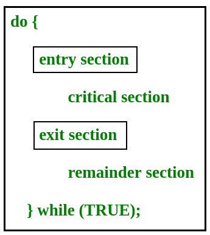

On the basis of synchronization, processes are categorized as one of the following two types:
- Independent Process : Execution of one process does not affects the execution of other processes.
- Cooperative Process : Execution of one process affects the execution of other processes.
Process synchronization problem arises in the case of Cooperative process also because resources are shared in Cooperative processes.
Critical Section Problem
Critical section is a code segment that can be accessed by only one process at a time. Critical section contains shared variables which need to be synchronized to maintain consistency of data variables.

{kind=link}
In the entry section, the process requests for entry in the Critical Section.
Any solution to the critical section problem must satisfy three requirements:
- Mutual Exclusion : If a process is executing in its critical section, then no other process is allowed to execute in the critical section.
- Progress : If no process is in the critical section, then no other process from outside can block it from entering the critical section.
- Bounded Waiting : A bound must exist on the number of times that other processes are allowed to enter their critical sections after a process has made a request to enter its critical section and before that request is granted.
Peterson’s Solution
Peterson’s Solution is a classical software based solution to the critical section problem.
In Peterson’s solution, we have two shared variables:
- boolean flag[i] :Initialized to FALSE, initially no one is interested in entering the critical section
- int turn : The process whose turn is to enter the critical section.

Peterson’s Solution preserves all three conditions :
- Mutual Exclusion is assured as only one process can access the critical section at any time.
- Progress is also assured, as a process outside the critical section does not blocks other processes from entering the critical section.
- Bounded Waiting is preserved as every process gets a fair chance.
- It involves Busy waiting
- It is limited to 2 processes.
Disadvantages of Peterson’s Solution
TestAndSet
TestAndSet is a hardware solution to the synchronization problem. In TestAndSet, we have a shared lock variable which can take either of the two values, 0 or 1.
0 Unlock 1 Lock
Before entering into the critical section, a process inquires about the lock. If it is locked, it keeps on waiting till it become free and if it is not locked, it takes the lock and executes the critical section.
In TestAndSet, Mutual exclusion and progress are preserved but bounded waiting cannot be preserved.
Question : The enter_CS() and leave_CS() functions to implement critical section of a process are realized using test-and-set instruction as follows:
void enter_CS(X)
{
while test-and-set(X) ;
}
void leave_CS(X)
{
X = 0;
}
In the above solution, X is a memory location associated with the CS and is initialized to 0. Now, consider the following statements:
I. The above solution to CS problem is deadlock-free
II. The solution is starvation free.
III. The processes enter CS in FIFO order.
IV. More than one process can enter CS at the same time.
Which of the above statements is TRUE?
(A) I
(B) II and III
(C) II and IV
(D) IV
Click here for the Solution.
Semaphores
A Semaphore is an integer variable, which can be accessed only through two operations wait() and signal().
There are two types of semaphores : Binary Semaphores and Counting Semaphores
- Binary Semaphores : They can only be either 0 or 1. They are also known as mutex locks, as the locks can provide mutual exclusion. All the processes can share the same mutex semaphore that is initialized to 1. Then, a process has to wait until the lock becomes 0. Then, the process can make the mutex semaphore 1 and start its critical section. When it completes its critical section, it can reset the value of mutex semaphore to 0 and some other process can enter its critical section.
- Counting Semaphores : They can have any value and are not restricted over a certain domain. They can be used to control access a resource that has a limitation on the number of simultaneous accesses. The semaphore can be initialized to the number of instances of the resource. Whenever a process wants to use that resource, it checks if the number of remaining instances is more than zero, i.e., the process has an instance available. Then, the process can enter its critical section thereby decreasing the value of the counting semaphore by 1. After the process is over with the use of the instance of the resource, it can leave the critical section thereby adding 1 to the number of available instances of the resource.
References
www.csee.wvu.edu/~jdmooney/classes/cs550/notes/tech/mutex/Peterson.html
http://iit.qau.edu.pk/books/OS_8th_Edition.pdf
Please write comments if you find anything incorrect, or you want to share more information about the topic discussed above